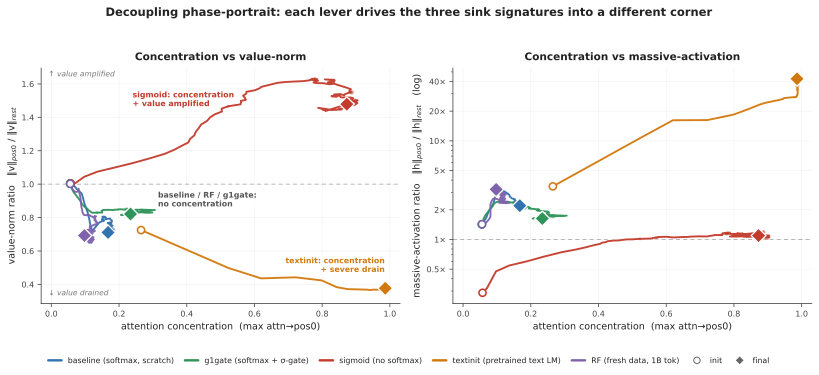
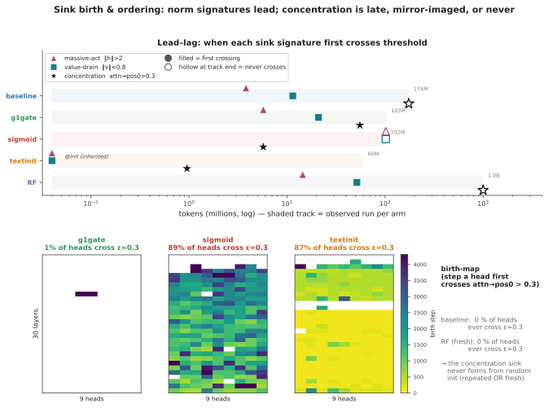
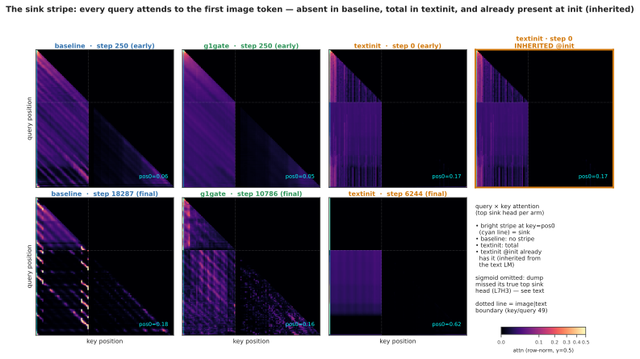
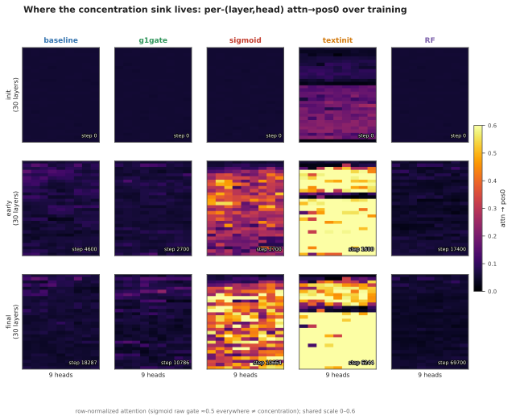
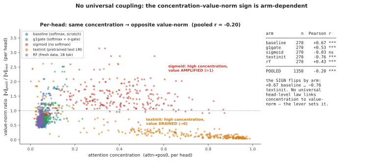
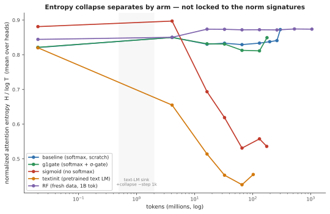

samvat.t@gmail.com
July 2026 · Preprint draft v2
Abstract. Attention concentration on early tokens, near-zero value-vector norms at the attended token, and massive residual-stream activations co-occur so reliably in trained language models that they are often treated as facets of a single “attention-sink” phenomenon. We test that reading in a setting where the signatures can be watched forming: from-scratch multimodal pretraining. We train a 222M-parameter vision–language model (a SigLIP-B/16 encoder feeding a randomly initialized SmolLM2-135M-architecture decoder) under four training levers — standard softmax attention, output-gated softmax, unnormalized sigmoid attention, and decoder initialization from a pretrained text LM — and log all three signatures as separate per-head quantities throughout training. They come apart. Across three seeds, the four levers land in four distinct corners of (concentration × value-norm × massive-activation) space; no two arms share a signature triple, and the value-norm ratio alone is drained (0.38–0.72), unchanged (≈1), or amplified (1.48–1.60) depending on the lever. On a repetition-confound-free run over one billion fresh tokens (single seed), massive activation grows +130% while attention concentration stays at exactly zero. Per-head correlation between concentration and value-norm flips sign across arms (+0.67 to −0.76; pooled −0.20): no fixed-sign coupling links the two axes. Prior text-only work separates massive activations from attention sinks; we show, for the first time in from-scratch multimodal pretraining, that all three signatures, value-norm drain included, respond independently to ordinary training-time choices.
Early in training, decoder-only transformers start parking a disproportionate share of attention on the first token(s) of a sequence, whatever the content. The habit matters in practice: streaming inference schemes rely on it [12], and the extreme activation outliers that ride along with it complicate quantization [10]; a survey now organizes a subfield around interpreting and mitigating it [13]. In text language models the sink also arrives with company. Attention concentration, near-zero value-vector norms at the sink token (“value-state drain” [6]), and abnormally large residual-stream activations (“massive activations” [10, 11]) have been observed to emerge together, concentrating on the same few tokens [1] and co-emerging early in training, by roughly step 1k [2]. Their consistent co-occurrence has led these signatures to be treated, often implicitly, as facets of a single attention-sink phenomenon.
Whether they actually are one phenomenon is unsettled, and actively contested. One line of work argues for genuine causal unity: massive activations in the residual stream mathematically require representational compression, and ablating them eliminates both compression valleys and sink formation [2]. A companion view holds that outlier-driven rescaling by attention and residual sinks is essential to stable transformer training [14]. Pulling the other way, two recent text-only studies dissociate pairs of these signatures by intervention. Normalization-scheme changes crush the massive-activation spike while the sink ratio survives [3]; a value-scale intervention in from-scratch text LMs preserves sinks while suppressing massive activations [4]. Each of these results is text-only, and each separates at most two of the three signatures.
Vision–language models turn out to be a sharp instrument for this question, for two reasons. First, the multimodal setting changes what position 0 is. In our layout the sequence begins with 49 image tokens and there is no BOS, so the candidate sink token is a visual token, stripped of the special-token machinery that text-LM sink accounts lean on. Second, existing multimodal sink studies analyze frozen, already-trained backbones at inference time [7, 8]. They establish that vision-side and language-side sinks have distinct origins, but a frozen model cannot answer an emergence question. Whether the three signatures arise together, in sequence, or independently is only observable while they form, and that requires from-scratch pretraining with all three logged separately, densely, from step 0. To our knowledge no prior work does this in a multimodal model.
We do it at deliberately small scale: a 222M-parameter nanoVLM [18] — a pretrained SigLIP-B/16 encoder [16] feeding a randomly initialized decoder with the SmolLM2-135M architecture [17] — trained under four levers chosen to target one sink-relevant mechanism each. baseline uses standard softmax attention. g1gate adds a zero-initialized elementwise output gate on attention, which in text LLMs removes both the sink and massive activations [5]. sigmoid replaces softmax with unnormalized sigmoid attention, removing the normalization that sinks are argued to stem from [1]. textinit initializes the decoder from the pretrained SmolLM2 text LM, importing whatever sink structure text pretraining built. A validated probe logs concentration, value-norm ratio, and massive activation per (layer, head) every 100 steps. Because the four-arm comparison reuses a small image pool at high epoch counts, we re-test the central negative result on a fresh, non-repeated 1-billion-token stream (RF), removing the overfitting confound.
Contributions.
Text-only work already separates massive activations from concentration, via normalization [3] and value-path [4] interventions, so decoupling per se is not new and we do not claim it. What is new is the conjunction: all three signatures, including value-norm drain as a third independently moving axis, shown separately controllable during from-scratch multimodal pretraining — a setting no prior decoupling or co-emergence study has examined.
Model and token layout. All runs use a 222M-parameter nanoVLM [18]: a SigLIP-B/16 vision encoder [16] (pretrained, trainable) feeding a decoder with the SmolLM2-135M architecture [17] through a learned modality projector. The decoder has 30 layers of grouped-query attention with 9 query heads sharing 3 KV heads per layer — 270 (layer, query-head) pairs but only 90 (layer, KV-group) value projections, a distinction that matters when we count per-head observations (§3.3). Except in the textinit arm, the decoder trains from random initialization; the point is to watch the signatures form. Sequences are 49 image tokens (a causal prefix) followed by 79 left-padded text tokens, 128 in all. Position 0 is the first image token; there is no BOS. Whatever happens at position 0 is a property of the visual prefix, not inherited BOS machinery.
Arms. Four training levers, each targeting one sink-relevant mechanism, with everything else held byte-identical:
| arm | attention | LM init | ViT init | lever precedent |
|---|---|---|---|---|
| baseline | softmax | random | pretrained | — |
| g1gate | softmax + elementwise σ-gate (zero-init, post-SDPA) | random | pretrained | G1 gating [5] |
| sigmoid | unnormalized sigmoid, no softmax | random | pretrained | Gu et al. [1] |
| textinit | softmax | pretrained SmolLM2-135M | pretrained | — (novel control) |
The g1gate and sigmoid levers have established text-only sink effects [5, 1]. textinit has no sink-literature precedent; it acts as an inheritance control, importing whatever sink structure text pretraining already built into SmolLM2.
Data, and the two training regimes. The four-arm comparison trains on four curated subsets of the_cauldron [19] (~146K images), matched at ~100M tokens/arm (60M for textinit, which reaches its three-signature floor earlier; §3.1). Reusing a 146K-image pool means high visual-epoch counts, so a “no sink emerges” reading could in principle be an overfitting artifact. The RF run (random-fresh) therefore re-trains the baseline arm on a fresh FineVision stream [20] to 1B tokens (~4.6M natural images; 2.39 effective visual epochs, vs. ~74 for the repeated pool). Swapping datasets trades the repetition confound for a domain-shift confound. We accept and document that trade (the fresh pool is natural-image, COCO-heavy, <3% overlap with the repeated subsets) rather than run a third, domain-matched control (§5).
Three signatures, tracked separately. The three sink symptoms reported together in the text-LM literature are logged as independent per-(layer, head) quantities, following the metric conventions of Gu et al. [1] at fixed sequence length:
All three are pos0-anchored by construction. We state this as a measurement choice and check it: at seed 0, per-position attention mass puts position 0 as the maximum-mass token in every arm (Appendix C). The residual seed-level caveat is handled in §5. The sigmoid arm reports the row-normalized attention view so concentration is comparable across arms (raw sigmoid mass is also logged).
Probe. probe_sinks() re-walks the decoder in eager/fp32/no-grad mode from the live module weights, independent of the training path (fused SDPA kernels, autocast, torch.compile). Every call validates its hidden states against the model’s real forward pass (relative error < 10⁻²), so the probe cannot silently drift from what the trained model computes. The probe batch is fixed across all runs and seeds; every number in this paper is comparable run-to-run. Probes fire every 100 optimizer steps, dense enough to timestamp each signature’s first threshold crossing (§3.4).
Recipe. AdamW (weight decay 0.1, following [1]), gradient clip 1.0, cosine schedule with 3% warmup (LM 4e-4, projector 2e-3, ViT 1e-4), bf16 autocast, torch.compile, batch size 128. Arms in a comparison differ only in the lever under test. Training is healthy in all reported runs; on the 1B fresh run, held-out fresh validation loss falls 1.46 → 0.638, tracking train loss with no overfit gap.

Table 1 reports the three signatures for all four arms and all seeds (baseline/sigmoid n = 2; g1gate/textinit n = 3), each read at its final matched checkpoint: ~100M tokens for baseline, g1gate, and sigmoid, and 60M for textinit, where all three of its signatures have plateaued; its h-ratio changes by less than 10% from 60M to 100M in the seeds that continued. Seed-0 values are trusted from a checksummed archive rather than re-derived first-hand (§5).
Table 1 — signature triple by arm, all seeds. Sink0.2 is the fraction of the model’s 270 (layer, head) pairs whose mean attention→pos0 exceeds 0.2.
| arm | seed | tokens | Sink0.2 | mean attn→pos0 | v-ratio | h-ratio |
|---|---|---|---|---|---|---|
| baseline | s0 | 101M | 0.000 | 0.068 | 0.723 | 2.16 |
| baseline | s1 | 100M | 0.000 | 0.062 | 0.687 | 1.71 |
| g1gate | s0 | 101M | 0.004 | 0.068 | 0.805 | 1.67 |
| g1gate | s1 | 100M | 0.011 | 0.073 | 0.845 | 2.04 |
| g1gate | s2 | 100M | 0.0037 | 0.072 | 0.854 | 2.24 |
| sigmoid | s0 | 102M | 0.830 | 0.377 | 1.479 | 1.10 |
| sigmoid | s1 | 100M | 0.756 | 0.311 | 1.603 | 1.30 |
| textinit | s0 | 60M | 0.852 | 0.627 | 0.377 | 42.5 |
| textinit | s1 | 60M | 0.556 | 0.235 | 0.634 | 5.50 |
| textinit | s2 | 60M | 0.578 | 0.232 | 0.484 | 12.2 |
Collapsing seeds to per-arm ranges (Table 2), no two arms share a signature triple. The value-norm axis alone takes three qualitatively different directions: drained below 1, essentially unchanged at 1, amplified above 1.
Table 2 — the four corners.
| arm | concentration | value-norm | massive activation |
|---|---|---|---|
| baseline | absent (0.000) | mild drain (0.69–0.72) | moderate (1.7–2.2) |
| g1gate | suppressed (0.004–0.011) | neutral (0.81–0.85) | moderate (1.7–2.2) |
| sigmoid | strong (0.76–0.83) | amplified (1.48–1.60) | none (1.1–1.3) |
| textinit | total (0.56–0.85) | strong drain (0.38–0.63) | extreme (5.5–42.5) |
The corners dissociate pairwise on single axes. g1gate separates from baseline purely on value-norm: concentration is (near-)absent and massive activation moderate in both, but the gate neutralizes the mild value-drain the baseline develops. sigmoid and textinit both reach strong concentration yet part ways on the value-norm direction (amplified vs. drained) and on massive activation (none vs. extreme). One lever moves one axis and leaves the others where a different lever put them; Figure 1 shows the four trajectories fanning out of a common origin.
Reproducibility differs by arm. g1gate is the tightest: Sink0.2 = 0.004/0.011/0.0037 across three seeds — at most 1% of heads — with mean and max attention→pos0 flat across seeds. baseline and sigmoid (n = 2) are tight in both seeds. textinit is the messy one: the corner is robust but its magnitudes are not. All three seeds show high concentration, strong value-drain, and h-ratio > 5, but seed 0 sits far above the other two on every signature at once (Sink 0.85 vs. 0.56–0.58; mean attn→pos0 0.63 vs. 0.23; h-ratio 42.5 vs. 5.5–12.2), while seeds 1 and 2 track each other. The h-ratio has plateaued by 60–100M tokens in both lower seeds, so the spread is genuine seed sensitivity rather than an unconverged transient. We therefore report textinit’s massive activation as a range (5.5–42.5×), median ≈ 12×, everywhere in this paper, and treat the corner as the reproducible claim rather than any particular magnitude.
The four-arm comparison reuses a 146K-image pool at high epoch counts, so its “concentration never emerges” reading could conceivably be an overfitting artifact. The RF run removes that confound: the identical baseline recipe on a fresh, non-repeated FineVision stream to one billion tokens (2.39 effective visual epochs).
Concentration never arrives. Sink0.3 = 0.000 across the entire 0 → 1B run; not one of the 270 heads crosses the sink threshold at any of ~700 probes. Massive activation, meanwhile, keeps growing far past warmup:
Table 3 — RF (fresh data, seed 0), init → 1B tokens.
| signature | @ init | @ 1B | net |
|---|---|---|---|
| Sink0.3 (concentration) | 0.000 | 0.000 | flat zero, entire run |
| max attn→pos0 | 0.056 | 0.098 | ≈flat, far below threshold |
| h-ratio (massive activation) | 1.43 | 3.22 | +130%, still rising at 1B |
| v-ratio (value-norm) | 1.00 | 0.69 | net drain, non-monotone |
Warmup does not explain the h-ratio rise: it continues monotonically from 2.40 at ~57M tokens to 3.22 at 1B, long after the 3% warmup window closes. In Figure 1 (right), the violet trajectory climbs while never moving rightward. The v-ratio ends below its initialization value, but ~75% of that drop happens in the first 57M tokens and partially recovers afterward, so we report it as supporting context rather than ongoing emergence. Massive activation grows for a full billion tokens of multimodal training while attention concentration never leaves zero (a single seed; §5).
If concentration and value-drain were tightly coupled, their per-head correlation should at minimum carry a consistent sign across training regimes. It does not. Pearson r between per-head attention→pos0 and value-norm ratio at each arm’s final checkpoint (n = 270 (layer, query-head) pairs/arm; scatter in Appendix Fig. A2):
Table 4 — per-head r(attn→pos0, v-ratio), final checkpoint. ***p < 0.001; ns = not significant. See the independence note below.
| baseline | g1gate | sigmoid | textinit | RF | pooled (n = 1350) |
|---|---|---|---|---|---|
| +0.67*** | +0.53*** | −0.03 ns | −0.76*** | +0.43*** | −0.20*** |
Two honesty notes on the n. The decoder uses grouped-query attention (9 query heads share 3 KV heads per layer; §2), so the 270 pairs per arm contain only 90 independent value-norm observations — each KV group’s value vector is shared by 3 query heads, while the attention side is genuinely per-query-head. And the significance stars treat pairs as independent, which heads within a layer and within a KV group are not; read the stars as descriptive, not inferential. Neither caveat touches the finding itself, which is about sign: heads that attend more to pos0 have larger value norms in the baseline regime and smaller ones under text initialization, and the pooled correlation is weak only because opposite-signed arms cancel. A fixed-sign coupling would show the same sign everywhere. Each lever instead sets its own local relationship between the two axes.

Dense probing lets us timestamp each signature’s arrival (Figure 2), and the ordering is consistent within arm families. In the softmax-from-scratch arms (baseline, g1gate, RF), the norm signatures come early: massive activation crosses its per-head threshold within the first few to ~15M tokens, and value-drain follows within ~50M. Concentration never comes. 0% of baseline and RF heads cross the concentration threshold at any point in training; g1gate reaches 1% of heads, a single-layer blip late in training. sigmoid is the mirror image — concentration crosses early (~6M tokens; 89% of heads eventually cross) while neither norm signature ever does. textinit inherits rather than grows its signatures: value-drain is present at 0 tokens, imported with the pretrained text-LM weights, and concentration crosses before 1M tokens.

Figure 3 shows the same story at the single-head level: the query × key attention map of each arm’s top sink head. The vertical stripe at key = pos0 (every query attending to the first image token) is absent in baseline at both the early and final checkpoint, and total in textinit. Most telling is the rightmost panel: the stripe is already there at step 0 in textinit, imported with the text-LM weights before the model has seen a single image. sigmoid is deliberately absent from this figure: its checkpoint dump selected heads by an unnormalized gate score and missed the arm’s true top sink head (L7H3, 0.87 normalized attention→pos0), so any map we could draw would understate the arm; sigmoid’s concentration rests on Tables 1–2 and Figure 2 instead. Attention-entropy collapse, the text-LM literature’s usual concentration correlate, separates the same way: only sigmoid and textinit collapse, while baseline, g1gate, and RF stay flat (Appendix Fig. A3). Entropy collapse tracks the concentration axis, not the norm axes.
A positional footnote. In textinit, the three signatures partially decouple in position as well as magnitude. In some seeds the most-attended token, the residual-norm peak, and the value-drain minimum sit on three different tokens (e.g., attention at pos1 with the norm peak and drain at pos13). We report this as a caveat on where to anchor textinit’s magnitudes (§5), not as an independent finding.
Attention sinks and their companions in text LMs. Gu et al. [1] give the canonical empirical account: the sink token acts “more like key biases, storing extra attention scores, which could be non-informative and not contribute to the value computation” — small key/value norms at the sink are reported as part of the same phenomenon — and the sink is connected to massive residual-stream activations [10, 11]. They also show that removing softmax normalization (unnormalized sigmoid attention) prevents sink formation in text LMs up to 1B parameters at near-zero validation-loss cost, the result our sigmoid arm builds on. Guo et al. [6] describe the concentration/value-drain coupling as “active-dormant” heads, the sink head’s value state actively driven toward zero. Queipo-de-Llano, Arroyo et al. [2] make the strongest unity claim, and the only genuinely causal one: massive activations mathematically require representational compression, and ablating a model’s layer-0 massive activation eliminates both compression valleys and sink formation. Across Pythia checkpoints they find sinks, compression valleys, and massive activations emerging together by roughly step 1k and staying synchronized. We reserve “causally unified” for this result specifically. Peng et al. [15] trace a first-position sink circuit emerging early in from-scratch text pretraining: from-scratch emergence dynamics, text-only, without signature decoupling.
Prior decoupling results: text-only, two axes. Two recent papers already separate pairs of these signatures in text models, and our claim is scoped around them. Sun, Canziani, LeCun & Zhu [3] show massive activations and attention sinks are dissociable architectural artifacts. Switching normalization scheme (Sandwich, DynamicTanh, QKNorm vs. Pre-Norm) crushes the massive-activation spike while the sink ratio survives — a two-way dissociation (massive activation vs. concentration), text-only, via a normalization lever, on trained checkpoints. Chen & Yao [4] decouple the same pair from the opposite direction and from scratch: in 0.1–0.3B text LMs probed at dense checkpoints, a value-scale intervention preserves sinks while suppressing massive activations. Neither treats value-norm drain as a third, independently moving axis; neither is multimodal. On the opposite side of the argument, Qiu et al. [14] hold that outlier-driven rescaling by attention and residual sinks is essential to stable training. The field is actively unsettled, both on whether these signatures are separable and on whether they should be removed at all.
Multimodal sinks: frozen backbones, inference time. Luo et al. [7] identify high-norm attention-sink tokens originating in the ViT and separate ViT-propagated from LLM-emerged sinks; Choi et al. [8] likewise distinguish vision-sinks from language-sinks in a frozen LVLM and gate them layer-wise. Both establish that multimodal sinks have distinct vision- and language-side origins, a frame our textinit inheritance result fits naturally. But both analyze already-trained models, so neither can observe emergence, and neither measures the three signatures as separate quantities. Relatedly, vision transformers grow high-norm “register” tokens of their own [9], which is why the pretrained encoder gets its own limitation in §5.
The gating lever. Qiu et al. [5] introduce the head-specific, zero-initialized elementwise sigmoid gate on attention output that our g1gate arm uses; in text LLMs it “largely reduces the attention score allocated to the first token and decreases massive activations” while improving quality. Our finding sharpens what the gate does in the multimodal from-scratch setting. Concentration is already absent in the baseline, so the gate’s isolated, reproducible effect is to neutralize value-drain (v-ratio 0.81–0.85 vs. baseline 0.69–0.72) while leaving massive activation untouched — an effect invisible unless the three signatures are logged separately.
Positioning. The closest prior work separates at most two of the three axes, in text-only models, via normalization or value-path interventions; the multimodal studies analyze frozen models. We are aware of no study that tracks concentration, value-norm, and massive activation as independently measured quantities across from-scratch multimodal pretraining. Our claim is therefore the conjunction — first to show all three sink signatures independently controllable during from-scratch multimodal pretraining, adding value-norm drain as a third axis beyond the massive-activation-vs-sink dissociations shown in text models [3, 4] — not priority on decoupling itself.
Pos0-anchored metrics. All three signatures are measured at the first image token. We verified this anchoring first-hand at seed 0 by per-position attention mass, not just argmax: position 0 is the maximum-mass token in every arm — baseline 0.06 mean / 0.17 max-head, g1gate 0.07 / 0.23, sigmoid 0.30 / 0.66, and textinit 0.63 / 0.99 with the next-highest position at 0.009 (Appendix C). That validates the reported seed-0 magnitudes, including textinit’s h-ratio of 42.5. It does not close the question at seeds 1–2. Live-probe argmax data there shows the most-attended position can migrate off pos0 in textinit (one seed splits across pos1 and pos13), so part of textinit’s cross-seed magnitude spread may be position migration rather than pure magnitude noise — one more reason we report textinit as a range/median and treat its corner, not its magnitudes, as the claim. A full per-position value/residual-norm scan across all seeds is left to a camera-ready revision.
Pretrained vision encoder. The SigLIP encoder is pretrained, so no arm is fully from scratch; only the decoder is. ViTs grow high-norm register tokens of their own [9], and sinks can propagate from a ViT into an LVLM [7], so part of our massive-activation signal could in principle be inherited rather than decoder-formed. Our defense is the trajectory. h-ratio starts at 1.0–1.4 at initialization and rises through training (RF: 1.43 → 3.22 over 1B tokens); pure inheritance from a static encoder predicts a high, flat h-ratio from step 0. A random-initialized-ViT control, isolating the decoder entirely, is future work.
Token scale. Runs reach at most 1B tokens per arm, versus the ~5B canonical in the text-LM sink literature [1]. Sink emergence is early relative to that budget — text-LM sinks and their companions form by roughly step 1k [2], far inside our range — but we cannot rule out that a signature absent at 1B emerges later. Larger-scale confirmation is future work.
Textinit magnitude reproducibility. The textinit massive activation is seed-sensitive (h-ratio 5.5–42.5 across three seeds; seed 0 the consistent outlier on every signature). The corner — high concentration + strong drain + large massive activation — is the reproducible claim; no specific magnitude is.
Provenance and seed count. Seed-0 raw probes for the four-arm comparison are trusted from a checksummed archive summary, not re-derived first-hand. Seeds 1–2 were independently re-derived, and that audit caught and corrected a metric-labeling error in an earlier internal consolidation (mean vs. max attention mixed in one column), which is why we report the metrics like-for-like here. baseline and sigmoid have two seeds; g1gate and textinit three. The RF run is a single seed, and contains one OOM-forced, weights-only resume at ~57M tokens. The audit verified signature continuity across the seam: identical v/h values at the shared checkpoint, a double-covered 600-step overlap diverging within probe noise, concentration 0.000 on both sides; the decoupling movement also completes before the seam. Concentration was reproducibly zero across both seeds of the repeated-data baseline, which we take as adequate support for the negative claim. A second fresh-data seed would strengthen it.
Domain shift in the fresh-data control. RF removes the repetition confound (~74 visual epochs → 2.39) by switching datasets, introducing a domain-shift confound in its place. We accepted this trade deliberately: repetition is the dominant confound, and the fresh pool was chosen to minimize shift (natural-image, COCO-heavy, <3% overlap). The no-sink result also held in both the stronger- and weaker-shuffle regimes of the stream. A domain-matched fresh-and-repeated control is the known follow-up.
No benchmark accuracy is reported. We measure sink signatures with the probe of §2. We did not run downstream benchmark evaluation (e.g., MMStar) on any arm, and we make no claim about how signature dissociation relates to downstream capability.
We tracked the three signatures commonly bundled as “the attention sink” — concentration, value-norm drain, and massive activation — as separate quantities across from-scratch multimodal pretraining, and they came apart everywhere we looked. Four training levers produced four distinct signature corners, with the value-norm axis alone moving in three different directions. On a repetition-confound-free, single-seed billion-token fresh-data run, massive activation grew +130% while concentration never left zero. Per-head correlation between concentration and value-norm flipped sign across arms. The signatures even arrived in different orders: norms first and concentration never in the softmax-scratch arms, the mirror image under sigmoid attention, and everything at once, inherited at step 0, under text initialization.
The signatures are plainly related in general — text-LM work documents real interactions among them, including a causal route from massive activations to sinks and compression valleys [2]. What our results show is that the coupling is optional. In from-scratch multimodal pretraining, each axis moved independently under ordinary training-time levers, extending the two-way text-only dissociations [3, 4] to a third axis and a new setting. For interpretability and mitigation work, the practical upshot is blunt: one signature is not a proxy for the others. A model with no attention sink can still carry a growing massive activation, and a gate that removes value-drain may leave everything else untouched.
Next steps. A random-initialized vision encoder to isolate the decoder’s contribution to massive activation; a per-position norm scan across all seeds to close the remaining anchoring caveat on the text-initialized arm; and extending the fresh-data run past 1B tokens to match text-LM budgets.
Reproducibility. All signatures are computed by a self-validating probe (§2) on a fixed probe batch, from dense (every-100-step) logs; per-seed tables are in the Appendix. Code, the probe, run configurations, and per-run logs are available at github.com/nemesis8932/vlm-sink-emergence (branch sink-emergence); training checkpoints are hosted at huggingface.co/datasets/nemesismaniac/vlm-sink-emergence-ckpts.
[1] X. Gu, T. Pang, C. Du, Q. Liu, F. Zhang, C. Du, Y. Wang, M. Lin. When Attention Sink Emerges in Language Models: An Empirical View. ICLR 2025. arXiv:2410.10781.
[2] N. Queipo-de-Llano, D. Arroyo, F. Barbero, Y. Dong, M. Bronstein, Y. LeCun, R. Shwartz-Ziv. Attention Sinks and Compression Valleys in LLMs are Two Sides of the Same Coin. arXiv:2510.06477, 2025.
[3] M. Sun, A. Canziani, Y. LeCun, C. Zhu. The Spike, the Sparse and the Sink: Anatomy of Massive Activations and Attention Sinks. arXiv:2603.05498, 2026.
[4] Y. Chen, Z. Yao. Attention Sinks Induce Gradient Sinks. arXiv:2603.17771, 2026.
[5] Z. Qiu et al. Gated Attention for Large Language Models: Non-linearity, Sparsity, and Attention-Sink-Free. NeurIPS 2025. arXiv:2505.06708.
[6] T. Guo, D. Pai, Y. Bai, J. Jiao, M. I. Jordan, S. Mei. Active-Dormant Attention Heads: Mechanistically Demystifying Extreme-Token Phenomena in LLMs. CPAL 2025. arXiv:2410.13835.
[7] Y. Luo et al. To Sink or Not to Sink: Visual Information Pathways in LVLMs. arXiv:2510.08510, 2025.
[8] J. Choi, J. Kim, S. Kim, S. Hong, J.-H. Park. When Sinks Help or Hurt: Unified Framework for Attention Sink in Large Vision-Language Models. ECCV 2026. arXiv:2604.03316.
[9] T. Darcet, M. Oquab, J. Mairal, P. Bojanowski. Vision Transformers Need Registers. ICLR 2024. arXiv:2309.16588.
[10] M. Sun, X. Chen, J. Z. Kolter, Z. Liu. Massive Activations in Large Language Models. COLM 2024. arXiv:2402.17762.
[11] N. Cancedda. Spectral Filters, Dark Signals, and Attention Sinks. ACL 2024 (pp. 4792–4808). arXiv:2402.09221.
[12] G. Xiao, Y. Tian, B. Chen, S. Han, M. Lewis. Efficient Streaming Language Models with Attention Sinks. ICLR 2024. arXiv:2309.17453.
[13] Z. Su et al. Attention Sink in Transformers: A Survey on Utilization, Interpretation, and Mitigation. arXiv:2604.10098, 2026.
[14] Z. Qiu et al. A Unified View of Attention and Residual Sinks: Outlier-Driven Rescaling is Essential for Transformer Training. arXiv:2601.22966, 2026.
[15] R. Peng, R. Li, M. Chen, Y. Zhou, Q. Guo, X. Qiu. How Attention Sinks Emerge in Large Language Models: An Interpretability Perspective. arXiv:2603.06591, 2026.
[16] X. Zhai, B. Mustafa, A. Kolesnikov, L. Beyer. Sigmoid Loss for Language Image Pre-Training (SigLIP). ICCV 2023. arXiv:2303.15343.
[17] L. Ben Allal et al. SmolLM2: When Smol Goes Big — Data-Centric Training of a Small Language Model. arXiv:2502.02737, 2025.
[18] L. Wiedmann, A. Roy Gosthipaty, A. Marafioti. nanoVLM. GitHub repository, 2025. https://github.com/huggingface/nanoVLM.
[19] H. Laurençon, L. Tronchon, M. Cord, V. Sanh. What Matters When Building Vision-Language Models? (Idefics2 / The Cauldron). NeurIPS 2024. arXiv:2405.02246.
[20] L. Wiedmann, O. Zohar, A. Mahla, X. Wang, R. Li, T. Frere, L. von Werra, A. Roy Gosthipaty, A. Marafioti. FineVision: Open Data Is All You Need. arXiv:2510.17269, 2025.



Reproduces Table 1 with max attention→pos0 where available. This metric was logged for seeds 1–2 only (the seed-0 archive summary does not include it), so it is kept out of the main comparative table.
| arm | seed | tokens | Sink0.2 | mean attn→pos0 | max attn→pos0 | v-ratio | h-ratio |
|---|---|---|---|---|---|---|---|
| baseline | s0 | 101M | 0.000 | 0.068 | — | 0.723 | 2.16 |
| baseline | s1 | 100M | 0.000 | 0.062 | — | 0.687 | 1.71 |
| g1gate | s0 | 101M | 0.004 | 0.068 | — | 0.805 | 1.67 |
| g1gate | s1 | 100M | 0.011 | 0.073 | ~0.21 | 0.845 | 2.04 |
| g1gate | s2 | 100M | 0.0037 | 0.072 | ~0.22 | 0.854 | 2.24 |
| sigmoid | s0 | 102M | 0.830 | 0.377 | — | 1.479 | 1.10 |
| sigmoid | s1 | 100M | 0.756 | 0.311 | — | 1.603 | 1.30 |
| textinit | s0 | 60M | 0.852 | 0.627 | — | 0.377 | 42.5 |
| textinit | s1 | 60M | 0.556 | 0.235 | ~0.53 | 0.634 | 5.50 |
| textinit | s2 | 60M | 0.578 | 0.232 | ~0.59 | 0.484 | 12.2 |
Note on g1gate: both seeds with max-attention data show a single head at ~0.21–0.22 max attention→pos0 while the arm mean stays ~0.07 and Sink0.2 stays ≪ 0.05 — reproducible across seeds, and below every sink threshold used in this paper.
Mean and max-head attention mass by position at seed 0, confirming position 0 is the maximum-mass token — by mass, not merely argmax count — in every arm. This is the direct check behind the pos0-anchoring defense of §5.
| arm | mass@pos0 (mean) | max-head@pos0 | argmax-mass position | reading |
|---|---|---|---|---|
| baseline | 0.06 | 0.17 | 0 | pos0 max; diffuse (no sink) |
| g1gate | 0.07 | 0.23 | 0 | pos0 max; diffuse |
| sigmoid | 0.30 | 0.66 | 0 | pos0 max; broad raw-sigmoid mass |
| textinit | 0.63 | 0.99 | 0 | pos0 max; razor spike (pos1 = 0.009) |
Per-position mass profiles for seeds 1–2 and RF were not available at the time of writing (they require a checkpoint re-dump on GPU); only live-probe argmax data exists there, and it is the source of the textinit position-migration caveat in §5.
Two corrections made during the audit of this paper’s numbers, recorded for transparency: (i) an earlier internal consolidation mixed two metrics (mean vs. max attention→pos0) in a single column, manufacturing an apparent seed anomaly in g1gate; re-derived like-for-like, the anomaly disappears and g1gate is the most reproducible arm. (ii) An earlier draft claim that textinit’s residual-norm peak “stays pinned at pos0” was checked against the norm dump and found wrong — the ‖h‖ peak sits at pos1 or pos13 depending on seed, which is the positional-decoupling footnote of §3.4, stated there in its corrected form.